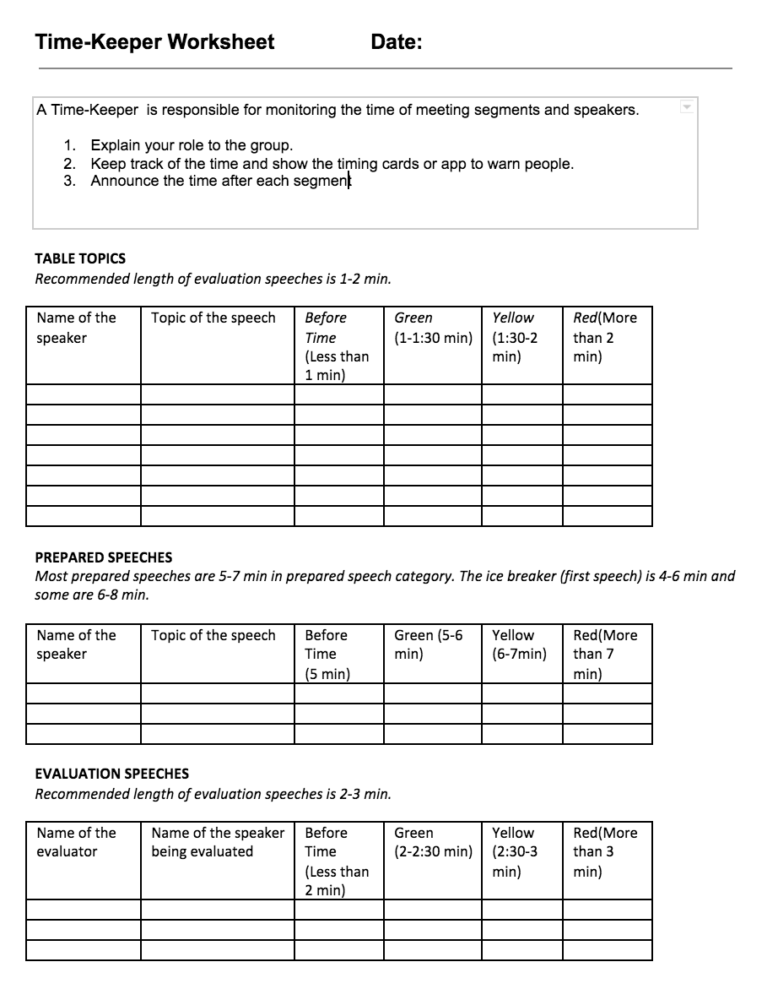

<!-- Main -->
	<div id="main" class="wrapper style1">
		<div class="container">
			<section>
				<p align="center"></p>
				<div class="10u -1u">
					<header class="major">
						<!-- <h2>Blog</h2> -->
						<!-- <span class="byline">Integer sit amet pede vel arcu aliquet pretium</span> -->
					</header>
					<h2>Summary of the Role</h2>
					<ul>
						<li>The Vote Counter is responsible for counting the votes for best table topics, speech, and evaluator. </li>
						<li>At the beginning of the meeting, explain your role to the group.</li>
						<li>At the end of each segment (table topics, prepared speeches and evaluation speeches), take the ballots from the people.</li>
						<li>Lead and count votes for best table topics, speech, and evaluator.</li>
						<li>When asked to reveal the Table Topics winner by the Toastmaster/Chair, enthusiastically announce the winner and present them with a medal.</li>

</ul><br>
<!-- <h2>Evaluation form</h2>
Download: <a href="timekeepervotecounter.pdf"></a>
	
	<br>

<a href="https://www.toastmasters.org/Membership/Club-Meeting-Roles/Timer"><h2>Resource from Toastmasters International</h2></a>
 -->

				</div>
			</section>
		</div>
	</div>
